之前搭建了一台minecraft私服，拉了基友和妹子来玩，体验了一把当“腐竹”的感觉。基友为了和他的其他基友（也就是我基友的基友）也搭建私服一起玩耍，向我请教了一番表示要学习点人生经验。出于对基友深沉得爱，我觉得有必要认认真真写一篇私服搭建指导教程。
在教程开始之前，需要声明以下几点：
1.这篇教程并非完全傻瓜式教程，你需要有一定的计算机基础操作能力比如：开关机，浏览网页，使用搜索引擎。
2.如果你现在想问问我“什么是minecraft？”“建服务器干啥用？”，强烈建议点击电脑屏幕右上角或者按手机返回键。
3.你需要有及其出色的耐心和理解能力来搞清楚本篇——由“程序员”写出的，生涩难懂的——教程。或者你不完全明白也没所谓，你能跟着一步一步操作的话，应该也是可以达到预定效果的。
4.由于操作设备差异，对此教程中出现的服务器操作代码和指令，你需要一定的变通应用能力，或者放弃能力。
5.本教程以minecraft官方最原版1.11服务端搭建作为演示案例,第三方和集成包的各种情况下，操作原理通用，但操作方式略有差异，不再针对性说明。
先去搞一台云服务器
所谓的云服务器，就是这么个东西。
目前国内云服务器运营不错的有BAT（百度、阿里、腾讯）三家，本教程推荐使用腾讯云，尤其是针对在校大学生，腾讯云还额外提供校园优惠业务，最低每月一元提供基础配置服务器，对于搭建10人左右小型minecraft服务器完全够用。
首先需要申请腾讯云提供的“云+校园”优惠业务，此过程按流程操作，需要实名认证和学生认证，成功之后即可领取学生优惠。
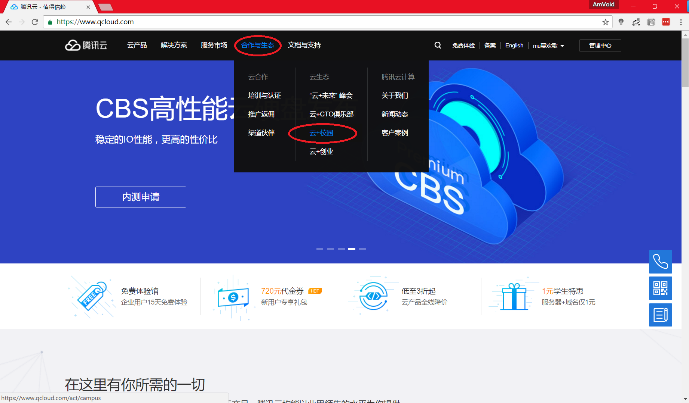
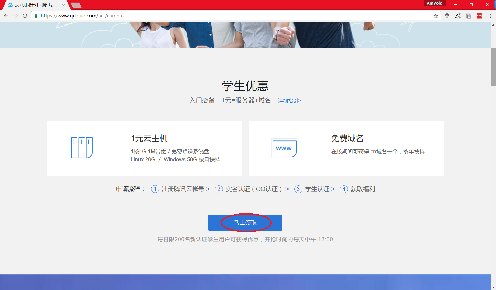
拿到券或者没拿到之后，就可以进入申请“云服务器”流程。
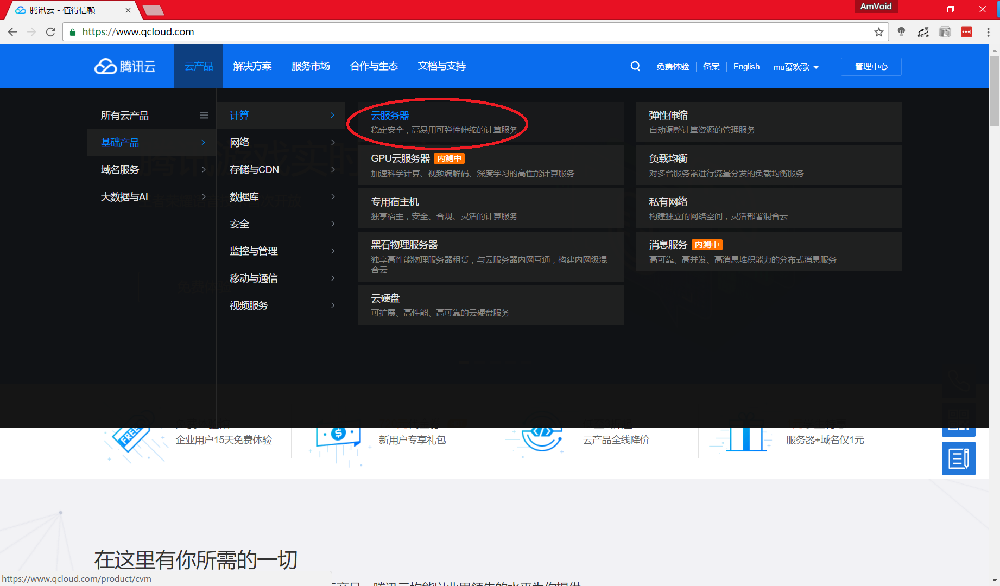
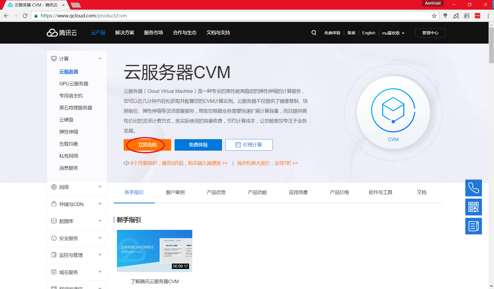
这里【地域】选项中注意选择距你个人所在区域较近的服务器，减少延迟和ping值，更加流畅。
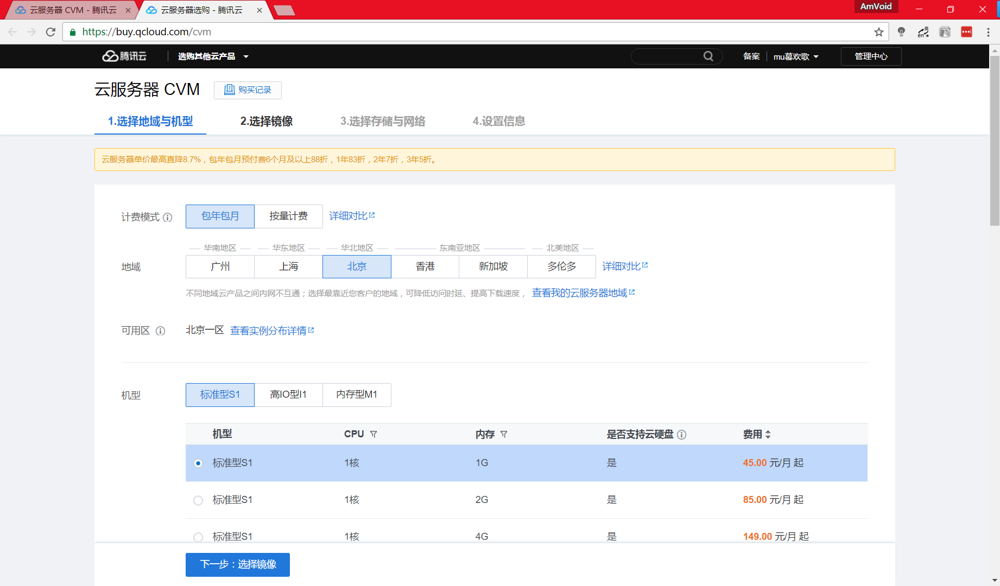
镜像设置步骤中，服务器系统推荐使用Linux系统中的CentOS，相对于臃肿的Windows Server，Linux优点在于更少占用硬件配置，低配置更加流畅，并且易于使用指令进行操作。当然如果你更加熟悉其他类型的linux系统（比如Ubuntu），也可以按照个人情况与水平进行选择设置。
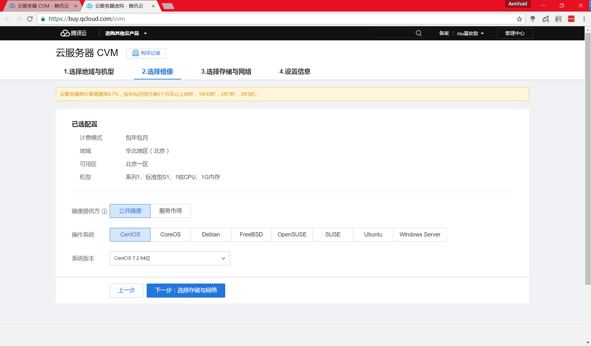
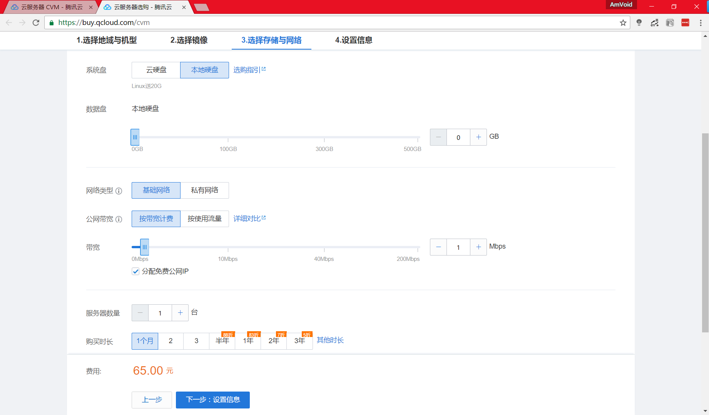
最后服务器配置，按要求设置密码并且牢记密码。
注意：【安全组切】记要选择【默认安全组放通全部端口】，这样才能允许他人通过你的服务器ip访问进你的服务器，并且一起玩耍。
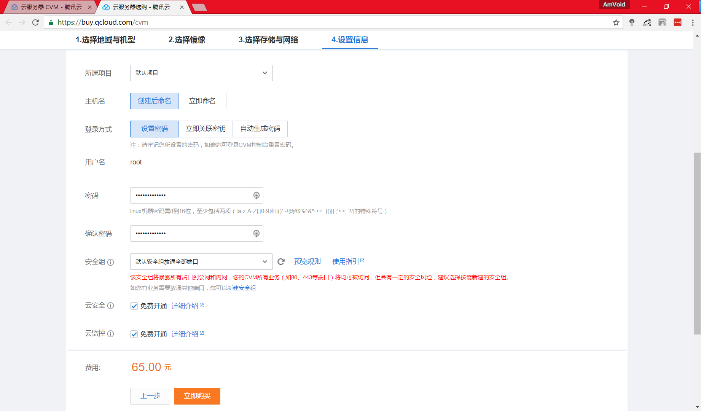
稍作等一下下，你的云服务器就会完成装配。装配完毕后，回到腾讯云的主页，点击网页右上角【管理中心】，选择你刚刚装配好的云服务器，然后就可以在管理界面管理你所拥有的云服务器啦。
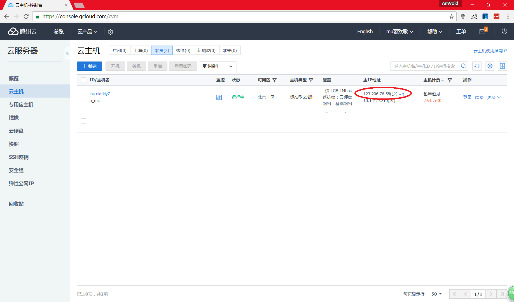
在电脑上你还需要这些
现在你有了自己的云服务器，然后在你的电脑上，你需要的是这些软件：Xshell、Xftp（获取方式点击这里），用来通过远程方式管理你的云端服务器。
注意：软件均为英文，正常步骤安装，中间安装选项请选择“Free for Home/School”。
Xshell用来远程访问与控制，Xftp用来远程传输文件。有这两个软件，就可以在你自己的电脑上来访问控制你的云服务器和传输文件到你的云服务器。
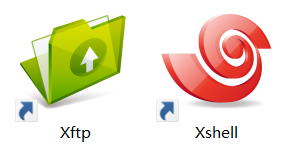
来调戏试一下云服务器
首先打开Xshell，你会看到这个界面，然后点开“会话”窗口里的“新建”。
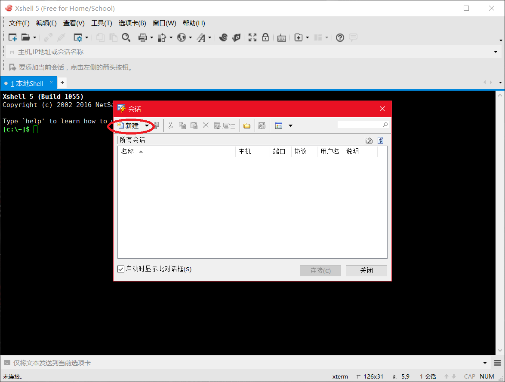
名称按喜好自己给填，协议要选默认的SSH主机要填上文第一部分中最后一张图里，红圈标注的公网ip地址，端口号为默认22，说明按喜好自己填写，其他均为默认设置，确定。
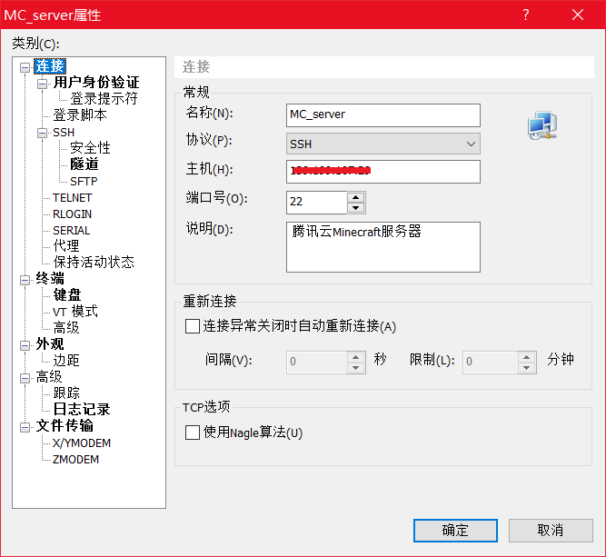
接下来点开【连接】，然后选择【接受并保存】。
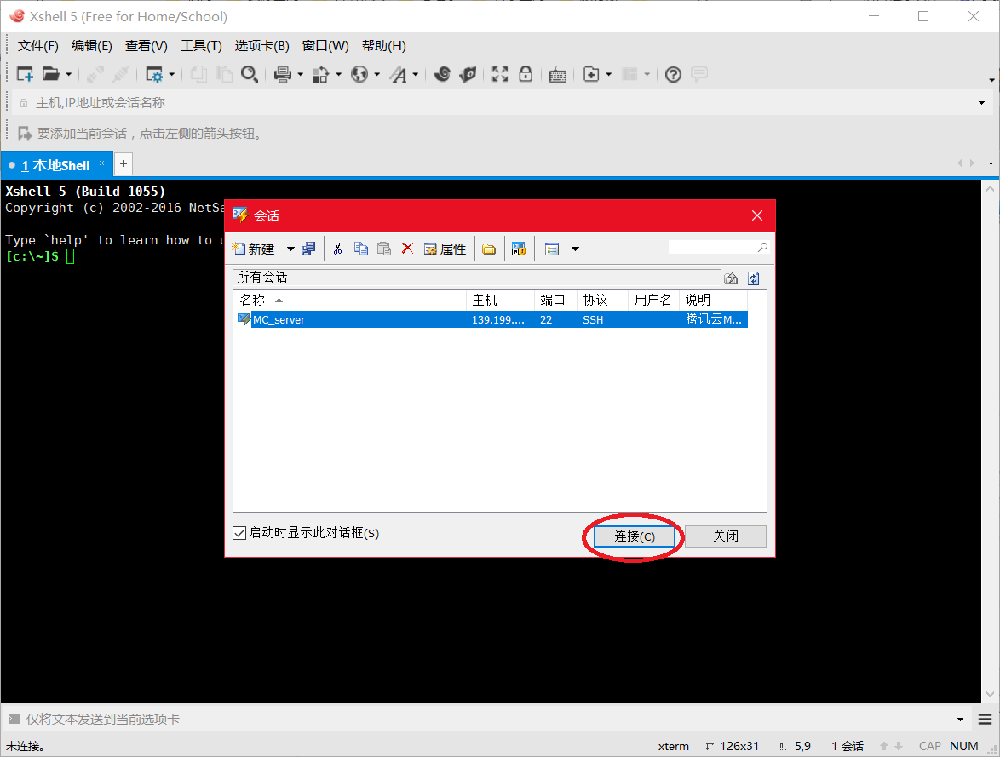
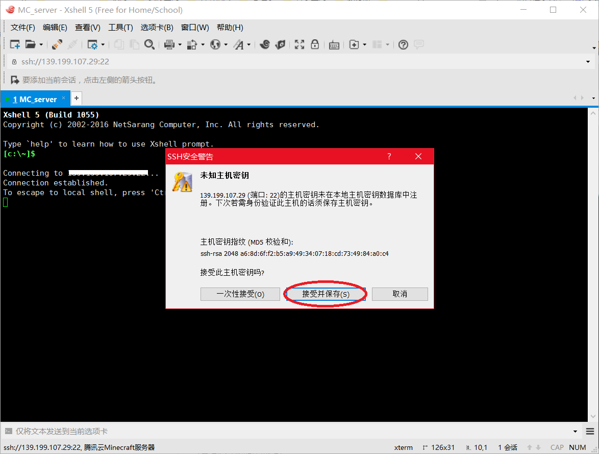
登录，输入用户名为root，密码是申请服务器时设定的密码。这就是为什么上文让你牢记密码的原因，如果你已经忘了的话，加油想一想。
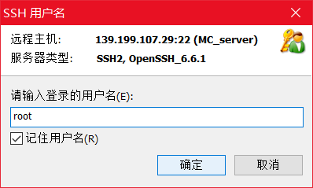
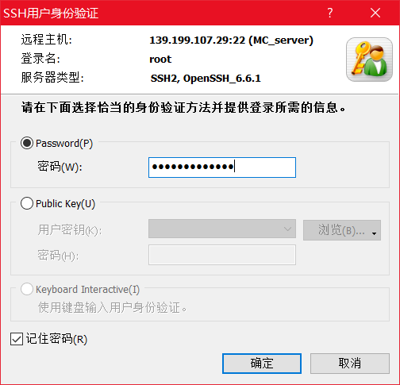
登录完成，你应该就可以看见下面这个界面了。
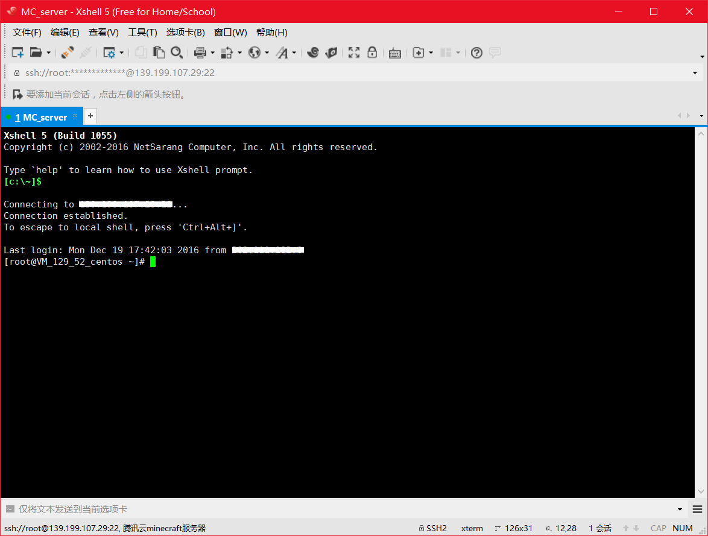
现在，你已经有了一台自己的云服务器，并且可以通过自己的电脑远程访问与控制。接下来，我们要做的就是，通过远程操作，来完善服务器环境配置，让我们的云服务器做好准备，来顺利运行Minecraft服务端。
接下来的教程，将继续用Xshell进行远程控制，升级我们的服务器系统，检查配置，配置Java，screen，以及运行Minecraft服务端。
未完待续。